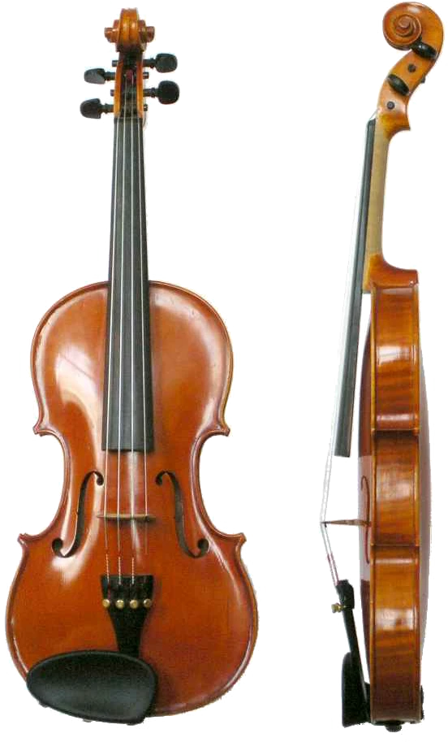

جایی برای تمرین
آینه، کوککن و تمرین گوش میتوانند به تمرین خانه کمک کنند. کنترل صدای اولیه زمان میخواهد و کیفیت یک جلسه، معیار استعداد نیست.
صدایی پیوسته، بیانی شخصی
ویولن سازی چهار سیم است که بیشتر با آرشه نواخته میشود و با انگشت نیز میتوان سیمهایش را زخمه زد. جای دقیق انگشت روی دسته و کنترل آرشه، زیر و بمی و کیفیت صدا را شکل میدهند. ویولن در موسیقی ایرانی، کلاسیک و گروهنوازی مسیرهای متنوعی دارد.

آرشه امکان امتداد و تغییر پیوسته صدا را میدهد. فشار و سرعت آرشه و محل تماس آن با سیم، رنگ و شدت صدا را تغییر میدهند.
انتخاب ساز از علاقه و تجربه آغاز میشود. برای تصمیم نهایی، ساز را از نزدیک امتحان کن و با مدرس دربارهٔ شرایط تمرینت حرف بزن.
ترتیب و سرعت آموزش با تجربه، تمرین و برنامهٔ استاد تنظیم میشود.
آینه، کوککن و تمرین گوش میتوانند به تمرین خانه کمک کنند. کنترل صدای اولیه زمان میخواهد و کیفیت یک جلسه، معیار استعداد نیست.
ساز در اندازههای مختلف عرضه میشود. اندازه مناسب، سلامت آرشه، پل و تنظیم ساز را استاد بررسی کند؛ ساز بزرگتر الزاماً انتخاب بهتری نیست.
پیش از خرید ساز، نظر استاد را بپرس.صدای خشدار در شروع ممکن است رخ دهد؛ با اصلاح تماس آرشه و تنظیم ساز بهتر میشود.
بله؛ رپرتوار، شیوه بیان و بعضی جزئیات تکنیکی متفاوتاند. علاقهات را در جلسه مشاوره به استاد بگو.
با هزارآوا علاقههایت را مرور کن و تجربهٔ ریتم و شنوایی را امتحان کن.
آشنایی با هزارآوا ✦عکس: Just plain Bill · تصویر اصلی · CC0 · نسخهٔ بهینهشده و بدون پسزمینه.